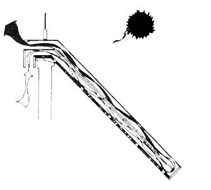
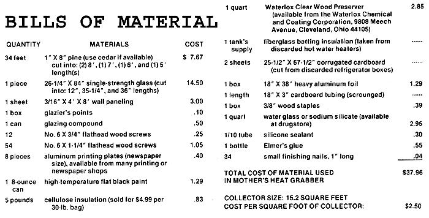
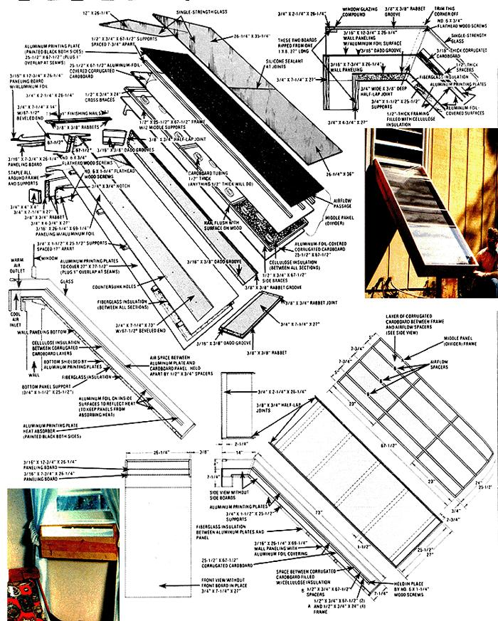

MOTHER's second generation Heat Grabber is simply a weather tight wooden box that's insulated on the bottom and topped with single strength glass. Inside this box, an insulated divider is mounted just about halfway between the glass and the container's bottom, with a small airspace left at the foot of the box for circulation.
The divider itself is additionally separated into two parts: the main body (which serves as a partition between the upper and lower chambers of the collector) and the airflow passages (which are located on the top side of the divider under a black aluminum plate, and which-in effect act to increase the surface area of the collector).
The divider is then brought out the upper end of the box where it forms part of a "lip" that hooks over a window-sill (so the window can be pulled down snugly against the top of the collector's frame and the glass) ... leaving the main part of the collector leaning against the outside of the house at about a 45° angle.
When the sun is shining, its rays pass through the glass on top of the collector and heat the black aluminum plate mounted on the upper surface of the divider within. As the heat radiates from the aluminum, it [1] warms the air between the plate and the glass, and [2] at the same time raises the temperature of the air In the airflow passages underneath the aluminum plate. This heated air, then, naturally rises up the face of the divider and in short order begins to pour out of the opening in the top of the Heat Grabber and into the room.
Of course, as the hot air rises up and out of the box, it pulls cool air from the foot of the container ... which, in turn, draws more cool air from the lower opening in the top, or "head" of the collector . . . and the cycle repeats itself as long as the sun continues to shine. And if the sun isn't shining? Well, then the air in the box cools and sinks to the foot of the collector ... where it prevents any reverse circulation within the box. In other words, the Heat Grabber will feed hot air into a room when the sun shines but won't pull heat from the room when the sun goes down.
MOTHER NO. 47 (1977 September/October Issue) featured a very Interesting little solar furnace. The unit could be built in less than two hours for just $2.56 a square foot ($32.18 total). It fit right into any south-facing window that could be opened. And-all by Itself-it could heat a reasonably well-Insulated room almost anywhere on the continent on almost any sunny but otherwise frigid day.
And it still can (which is why so many hundreds of people here In the U.S. and In Canada have constructed and are using the MOTHER-designed project).
The only real trouble with that original Heat Grabber, in fact, is the Celotex Thermax TF-610 that MOTHER's researchers specified as the major material for Its construction. Dang It! The highly insulative and easy-to-work construction board simply Isn't available in many parts of the country. And when it Is available . . . well, we've had reports that various suppliers aren't above charging double for what little TF-61 0 there is to go around.
So here's MOTHER's Heat Grabber all over again . . . only this time we're mostly fabricating the unit out of wood. The bad news is that It'll take you about six hours to construct this version. The good news is that [1] it'll cost you only $2.50 per square foot tops-and far less than that if you can scrounge up your lumber-to build this one, [2) this is a more rugged unit, [3) you should have no trouble finding everything you need for this version, and [4] we've added some refinements and improvements that-if anything-make this second MOTHER's Heat Grabber even more efficient than the first.
Before you start putting your own Btu-catcher together, though, remember this Important fact: For maximum effectiveness, you should "custom design" your Heat Grabber to rest In a window at an angle up from the horizon equal to your latitude plus 10°.
This adds up to 45° for MOTHER's North Carolina offices (which are situated 35° north of the equator). And that's what we get when we cut both sets of boards on the sides of the unit (where the "collector" portion of the Heat Grabber meets the furnace's "window box") off at an angle of 67.5°.
In Miami, however-which Is located about 25° north-a collector should be angled up at 35° to the horizon . . . which, In turn, means that the 67.5° cuts specified in the accompanying drawings should be 72.5° Instead. Likewise, the cuts should be 65.75° for Washington, D.C. . . . 61.5° for Seattle . . . and 54.5° for Anchorage. (You can calculate the specific "cut angle" for your own location merely by subtracting your latitude-plus10 from 180 and dividing by two . . . or just average it out from the figures given here. The angle is critical, but not that critical.)
And a word of warning: The panes of glass used on the "face" of MOTHER's Heat Grabber are single strength. As such, they're just as susceptible to accidental (or intentional) breakage as the single-strength glass you'll find in almost every residential window and door on the continent. Make sure your window furnace is installed with this caution In mind.
MOTHER's second-generation Heat Grabber consists, basically, of (1] a box shaped frame that is Insulated on the back, covered with glass on the top, and designed to hook over the lower sill of a window, and which contains [2] a divider Inside. This divider is composed of a main body (which separates the box into two chambers) and some airflow passages that run up the top surface of the divider's main body underneath a sheet of aluminum attached to that top surface.
Start construction of the frame by cutting two 87"long and two 27"-long 1 X 8's. Rout a 3116" X 318" groove (314" In from one edge) down the length of the two long boards and one of the short ones as shown. Measure down 14" from the "top" ends of both long boards and scribe two 67-112° marks (one "ahead of" and one "behind" the 14" measurement) on each board. Then cut out the wedge of wood you've just marked, so that the two 67-112° angles are left (see drawings).
Rabbet all the frame's comers, cut an. other rabbet into the top Inside edge of the frame (all the way around, Including the short pieces, to hold the glass that will eventually cover the box), cut another 3116' X 318" groove in each 14" length of framing as shown, and make a half-lap joint in both sides of the frame where the 67-112° angles will join. This, also, is a good time to rip a 27" length of 1 X 8 into two pieces: one 2-114" and the other 4-314" wide. Trim and rabbet both boards to the dimensions shown.
Cut two 314" X 4" X 4" squares from the remains of your 1 X 8 stock (which, as you know, only measures a real 314" thick . . . and only 7.114" wide), then seal all the sur. faces of the framing wood with a good preservative, such as Waterlox Clear Wood Preserver.
Saw a 26-114"-wide strip from your sheet of paneling and cut that strip into three sections: 69114", 12-314", and 7-314" long. Assemble the hal flap joints on the sides of the Heat Grabber's frame, trim the "point" at the top of each joint, and slip the 26-114" X 69-114" piece of paneling-face up-into Its groove along the frame's bottom edge. Fasten the "foot" to the frame's two sides with wood screws.
Slip the 7-314" X 26-114" piece of paneling Into the lower groove in the upper (14" long) section of the frame. Attach the 314" X 7-114" X 27" end piece to the lower 3-114" of the upper frame's sides (take care to mount the board so Its top edge is flush with the bottom of the grooves that you've made on the Inside of that part of the frame).
Fasten the 314" X 4" X 4" blocks to the ends of the 314" X 7-114" X 27" board and then attach the 314" X 4-314" X 27" piece of framing to the blocks. Tack the 7-314" X 26-114" piece of paneling that's already in the frame to this board with small finishing nails.
Slide the remaining (12-314" X 26-114") piece of paneling into the remaining set of grooves cut into the upper section of the collector's frame and tack it to the 3J4" X 7-114" X 27" end board. Then cut enough aluminum foil to cover the top surface of both the 12-314" X 26-114" and the 26-114" X 69-114" sections of paneling that you've mounted in the frame. Coat the tops of both panels with water glass, carefully lay the pre-cut pieces of foil on the boards like wallpaper (shiniest side up), and smooth out any air bubbles with a small block of wood. At this point you can complete the frame by fastening the 314" X 2-114" X 26-114" board (use small finishing nails) between the ends of the 14" side panels, at the top, as shown.
Turn the frame over, cut five 314" X 1-112" X 25-112" support strips from your 1 X 8 leftovers, space the strips about 17" apart with their 1-112" sides flat against the paneling that's already in the frame, drill through the sides of the collector into the ends of the strips, and fasten them in place with wood screws.
Trim the fiberglass batting to fit between the support strips and use it to cover all of the remaining exposed (under)surface of the paneling. Then with the collector still upside down-cut enough aluminum printing plates to cover the entire bottom of the Heat Grabber (don't forget to allow for 1" overlaps at the seams and for the 90° bend where the sheeting is fastened to the lip at the collector's top), and staple the plates to the edge of the frame and the cross-supports.
Turn the Heat Grabber back over and begin construction of the two-part divider by cutting five 112" X 314" X 67-112" strips and four 112" X 314" X 24" strips of wood from the remainder of your 1 X 8 stock. Then nail two of the 112" X 314" X 67-112" and all four of the 112" X 314" X 24" pieces of wood together into a 112" X 25-112" X 67-112" "ladder".
Trim both sheets of cardboard to the same outside dimensions as the ladder framework (25-112" X 67-112"), staple one of the sheets to one side of the frame, turn the assembly over, and glue the 112"thick tubing spacers to the cardboard's inside surface.
Fill this newly-formed "tray" with an ample amount of cellulose insulation (or fiberglass batting, if you have enough on hand), lay a bead of glue on the exposed surfaces of the 112".thick spacers and framing, and staple on the other sheet of cardboard to form an insulation-and. spacer "sandwich".
Cut enough aluminum foil to cover both pieces of cardboard. Then coat one side of the divider with water glass, carefully cover it with foil, turn the divider over, and cover its other side the same way.
Position the three remaining 112" X 314" X 67-112" strips of wood on top of the foil-covered divider-314" sides down spaced as shown (7-314" apart)-and nail them to the divider's frame and cross members. Then cut enough aluminum printing plate material to cover the 25-112" X 67-112" area (allow enough for overlap at the seams), cover it well on both sides with a coat or two of high-temperature flat black paint, and staple the aluminum sheeting to the three supports.
Position the completed divider in the collector's frame-aluminum plate up so that it's butted up against the foil covered paneling in the Heat Grabber's upper section (this will leave about a 2-314" space between the divider's bottom end and the frame's lower end board). Hold the divider up temporarily so that there's a 2-114" space all the way up and down between its back surface and the foil-covered paneling underneath it. Then drill through the Heat Grabber's sides into the sides of the divider's framing and secure the divider in place with wood screws.
Lay the three panes of glass into the groove around the top of the collector's frame, tack them in place with glazier's points, run a bead of silicone sealant along the two seams where the panes meet, and form a weather tight seal between the glass and the wooden frame with glazing compound.
Your Heat Grabber is now ready to Install In any south-facing window (that's not shaded from the sun) on any house, apartment, garage, etc. that you want to warm with "free" solar energy this winter. Just hook its top "lip" over the window sill, prop the unit's base up on cinder blocks or a little stand built specially for the purpose, shut the window firmly down on the collector's top . . . and sit back and enjoy the warmth that your Heat Grabber will Instantly start pumping Into the room during sunny weather. a Although an experienced woodworker should be able to construct his or her own Heat Grabber from the information on these three pages, we're quite aware that a great many MOTHER readers will prefer to build their collectors from detailed, step-by-step, fully illustrated plans with some of the more critical parts and cross sections shown full size.
Such plans are available for just $10 . . . and they include a great deal of extra information: woodworking tips and hints, suggestions on saving money by substituting recycled materials for some of the items called for here, and an explanation of how to make MOTHER's Heat Grabber even more efficient with a few modifications (that cost only pennies).
Plans for a similar heat grabber, the The Window Heat Grabber, item number 754 are available for $10, or by calling 800-234-3368.
|
 Click here for a downloadable larger version of this construction illustration. |
 |
 |